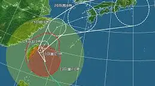

Ed Zitron
@edzitron.com
· 10/23 06:36· 命中「OpenAI」
OpenAI is washed

1 100+ 次搜尋 時事2026.10.23
時事2026.10.23
 生活2026.10.23
生活2026.10.23
 生活2026.10.23
生活2026.10.23
Social Lab（OpView 社群口碑資料庫）每週彙整各平台熱門事件。榜上的數據以圖表呈現， 這裡列出每週彙整的標題與觀測期間，點進去看完整排行。
 PTT
PTT
 Facebook
Facebook
 Dcard
Dcard
 Instagram
Instagram
 Mobile01
Mobile01
 YouTube
YouTube
 新聞
新聞
 Facebook 意見領袖
Facebook 意見領袖
 YouTube 意見領袖
YouTube 意見領袖
Social Lab 依社群聲量統計的各平台人氣意見領袖前三名。
Bluesky 的全站熱門話題，以英語圈的娛樂、體育、政治為主，僅供參考。
以 30 小時內、依讚數與轉發數排序，已過濾掉 AI 繪圖標籤與明顯洗版內容。
The threat of rogue AI agents taking unauthorized actions within our financial institutions, utilities, health systems and more has long since stopped being a hypothetical. If Congress doesn't swiftly act, these already significant risks will only get worse.
“.. There has been zero clamouring,’ said one of the people. ‘All the prior times [OpenAI] have been on there’s been a frenzy. This time is a bit of a thud.’” @financialtimes.com www.ft.com/content/bb56...
Like, is the biggest threat to cybersecurity the mere existence of LLMs, or is it the existence of companies like OpenAI with basically unlimited resources and an incentive to create large security incidents essentially as a marketing stunt?
three sources coming to the same conclusion :) :) :)
Winner winner arxiv.org/pdf/2610.27918 "AI disclosure. During the writing of this paper, we had several conversations with Claude, 55, owner of the neighborhood bar in Strasbourg. Unfortunately, none of them was of relevance to the topics of the paper."
A few LLM rock climbing articles I’ve seen: “Lead rope solo for beginners” Lead rope solo is niche, dangerous, advanced. The info was pure hallucination. Could easily kill someone “Best rope lynx harnesses for rock climbing 2026” The rope lynx harness is a WOW item
Just started watching a video during my lunch break about why trains are quicker than planes for many journeys. Fine, but not particularly well visualised for viewers. Just filmed on location rattling off times/numbers. 5mins in they did a “this is sponsored by an ai agent”. Gave up. Bye.
OpenAI trims valuation target to $1.25tn after pitching higher price ft.trib.al/v31DYCE
I see one (1) small problem with this approach *OPENAI IN TALKS TO SECURE MORE COMPUTING CAPACITY FROM UAE:CNBC
LMAO imagine giving an ai agent your BANK PASSWORD!! People have lost their everloving minds
New: Attorney General Ken Paxton is suing OpenAI, the maker of ChatGPT, for allegedly deceiving and harming Texans. CEO Sam Altman and ChatGPT are top competitors to Elon Musk, the tech billionaire fueling Paxton’s U.S. Senate campaign.
*TEXAS AG SUES OPENAI AND CEO SAM ALTMAN *TEXAS AG SUES OPENAI FOR 'NEGATIVE SIDE EFFECTS ON CONSUMERS'
no LLM could hallucinate anything as surreal as literally everything I read about college football
BREAKING: OpenAI announces that its most advanced model has discovered a podcast that does not feature Kara Swisher.